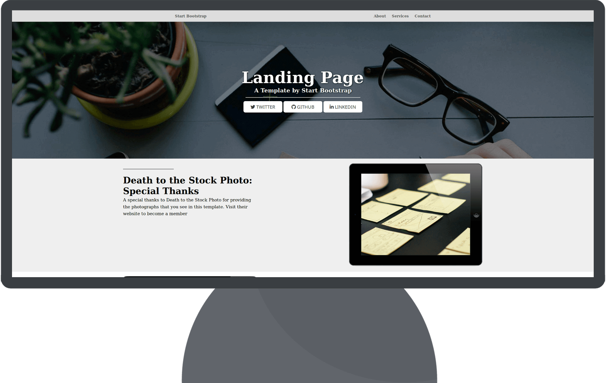

A propos de moi ...
Passioné d'informatique et de photographies,
je suis actuellement un apprenant de la formation développeur Web chez simplon réunion.
Créations de site
avec WordPress
avec WordPress
Installations et configurations de WordPress pour concevoir des sites
Webs, boutique WooCommerce et portfolio. Sauvegarde et migration de site Web. Créations et
modification d’un thème enfants. Identification et utilisation des langages HTML, CSS et
PHP. Optimisation du SEO et analyse du trafic de son site. Utilisation de logiciels de
transfert de fichiers en FTP.
Maintenances
informatiques
informatiques
Installations, réparations et suppressions de systèmes Windows et Linux
sur PC ou machines virtuelles. Assemblage complet d’ordinateurs. Détections de pannes
matériels. Optimisations d’ordinateur. Installations des pilotes de périphérique.
Récupérations, sauvegardes et restaurations de données. Création de serveur Web
Ubuntu/Debian et proxy Pf-Sense. Connaissance des différends périphériques. Compréhension
de l’anglais technique. Connaissance des réseaux informatiques.
Photographie
numérique
numérique
Utilisation du triangle d’exposition, Prise de photos en panoramas.
Connaissances des différends types de boîtiers et leurs capteurs : apsc, plein-format,
compacts… Utilisation des différends modes d’autofocus. Gestion de la focale. Gestion du
flou d’arrière-plan. Connaissance de l’hyperfocal et de la règle des tiers. Prise et
traitement des fichier Raw. Retouche simple et avancé d’image. Traitement par lots.
Utilisation des filtres ND et polarisant.
Maîtrise du vocabulaire et des métiers du projet web.
Prise en compte des exigences des utilisateurs.
Maîtrise des bonnes pratiques et surtout leur conception et leur utilisation.
Prévention des risques de qualité web.
Validation de la qualité d’un projet web.
Parcours et diplomes
- 2019 - Google, marketing numérique (Google.com )
- 2019 - Certification Opquast - avancé (opquast.com )
- 2019 - Developpeur Web (Simplon Reunion )
- 2018 - WordPress (Simplon Reunion )
- 2015 - Technicien Informatique
Mes projets Web réalisés

Landing Page
Réalisé en HTML/CSS, Bootstrap
Mon CV
Envie de consulté mon CV ?